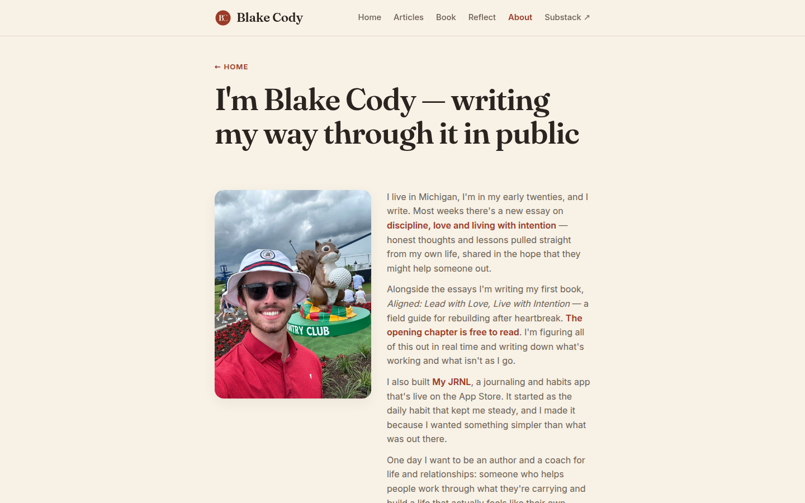

blakecody.com — UI & visual design audit / change log
/about.html
H1 "I'm Blake Cody — writing my way through it in public" 54.4px ✓
about copy 16px ✓
H2 "WHAT I'VE BUILT" 13.12px --accent-soft, contrast 3.38
H3 "My JRNL" app icon 76×76, App Store badge 156×52
You shipped an iOS app. It is live, it is real, and it is the one thing on this page that is not a statement of intent. Its section heading is set at 13.12px — the smallest type on the page — in a colour that fails contrast, below the fold, styled identically to a label.
An H2 at 13.12px is a section label wearing a heading's tag. That is fine for "Latest articles" on a busy homepage; it is the wrong treatment for the single strongest credibility signal on your About page.
Fix--ink, not --accent-soft. It becomes a section, not a caption.cover.jpg natural 900×1200 (0.75) displayed 280×373 (0.75)
object-fit: cover · width/height present · alt: "Blake Cody at
the 2025 U.S. Open"
Ratio preserved, no crop distortion, real alt text, explicit dimensions. This is the best-handled image on the site and it is exactly the fix V4 keeps asking for elsewhere — a source and a slot that agree.
The finding is scale, not handling. At 280px wide inside a 720px column, on a 1440px screen, the one photograph of the person the page is about occupies about 4% of the viewport. On a page whose job is "decide whether you trust me", the face is small.
FixWith V1's wider column, run the photo and the opening two paragraphs as a two-column block above the fold, photo at 380–420px. On mobile it already stacks correctly, so only the desktop rule changes.
--accent-soft Medium → V2| Element | Colour | Size | Ratio | Needs |
|---|---|---|---|---|
.section-label — "WHAT I'VE BUILT" | #c46a4f | 13.1px | 3.38 | 4.5 |
.eyebrow — "← HOME" | #c46a4f | 13.1px | 3.38 | 4.5 |
Everything else on the page passes: body copy 5.52, H1 13.62, subscribe H2 14.73, the eyebrow's own link 6.17.
One token — --accent-soft used for text — accounts for every contrast failure across articles, book, reflect, about and 404. Change it to #a8532f (≈4.6) or swap those uses to --accent #9a3b27 (6.17) and the entire site passes AA on text.
.substack-btn "Read & subscribe on Substack ↗" 291×49 y ≈ 1,760 .sub-form "Subscribe →" 460 wide y = 1,966
Two calls to action for the same outcome — get my writing by email — within one screen of each other, in different visual languages: a solid accent button linking out to Substack, then a native email field and button posting to Substack.
A reader who has just decided to subscribe now has to work out whether these are the same thing. They are.
FixKeep the native form — it is the better experience and it is the one you can measure. Change the button above it to something that is not a duplicate: "Read the essays" pointing at the archive, or drop it entirely and let the copy's existing Substack link carry it.
| Check | Result |
|---|---|
| Page depth | 1440 → 2,189px (2.43 folds) · 820 → 2,178px (1.85) · 390 → 2,719px (3.22) |
| Images | logo 30×30 (60×60 src) · cover.jpg 280×373 from 900×1200, ratio preserved ✓ · app icon 76×76 from 192 · badge 156×52 — all with width/height |
| Headings | H1 54.4px → H2 13.12px → H3 → H2 32px — the first H2 is label-sized |
| Contrast | .section-label 3.38 fail · .eyebrow 3.38 fail · body 5.52 ✓ · H1 13.62 ✓ |
| Buttons | .substack-btn 291×49 ✓ · .sub-submit 136×46 ✓ |
| Mobile nav | clientW 170 · scrollW 385 · 3 items off-screen (R1) |
| Content column / focus | .wrap 720px (V1) · browser-default focus ring (R3) |
UI page 05 of 7 complete.
blakecody.com UI change log · generated 7 September 2026